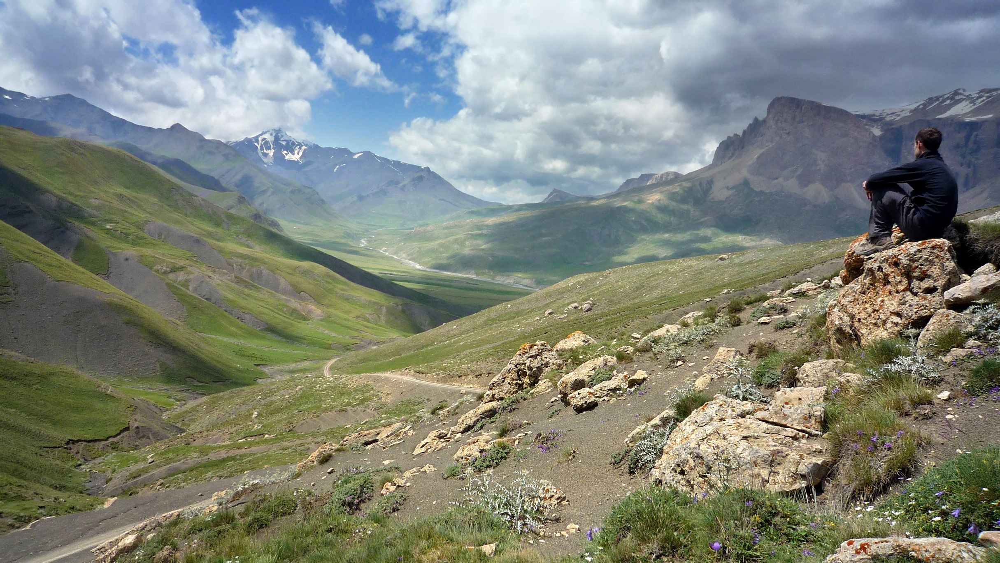
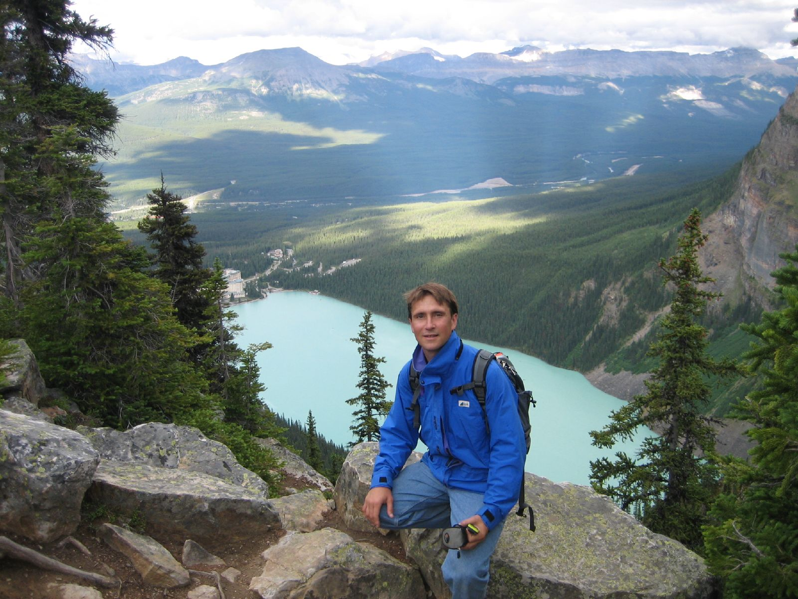
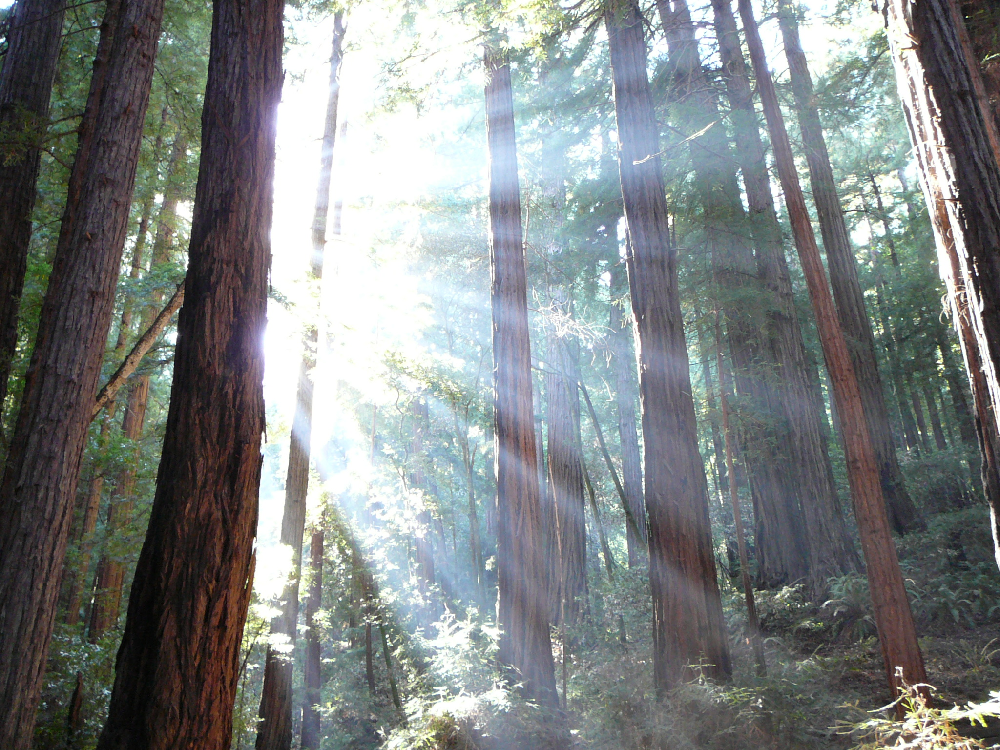
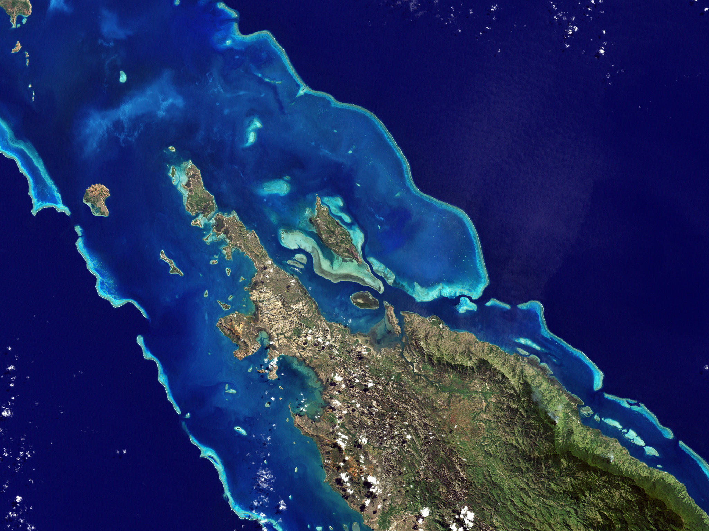

The future is a place we make together.
Learning to
see together.
Open models for understanding our world.
Shared tools for caring for it.
01 / Our world
A world worth
caring for.
Let’s take a deep breath and consider our home.
We are warmed by the same sun. We breathe the same air. Simple acts such as eating food or drinking water connect us to an extraordinary chain of phenomena. Even our awareness is sensate: our reasoning and our values are shaped by this world.
Yet each of our experiences is unique. Some of us grew up near mountains, others in cities, on the prairies, or along coasts. We each touch a different part of the world. Together, those experiences may contribute to a larger picture.
For me, it was growing up in Alberta, near the Rockies. My appreciation for the world is shaped by those memories. They are a big part of what motivates my interest in these questions.

What places have shaped you? Which experiences would you most like to protect? Before asking how to change the world, it helps to be clear about what we cherish in it.
That care is where this proposal begins. I want people and communities to have tools for exploring the consequences of decisions about their own places: open models of watersheds, ecosystems, and the human lives interwoven with them.
What if we could try out possible futures together, before committing to them?
We would still have different values. We would still face uncertainty. But we might become better able to see what is at stake, ask useful questions, and act with care.
02 / Hidden relationships
Beyond what
we can see.
Our reach has grown beyond our ability to understand its consequences.
We hear two messages about the Earth. One is that it is beautiful and extraordinary. The other is that we are damaging it. Between those messages, there is often a feeling of grief, frustration, or powerlessness.
I am interested in what happens next. Our emotions shape what we choose to reason about. We become pragmatic about things we care for and feel capable of changing. A sense of futility can close that door before we even begin.
Part of the difficulty is that the world exceeds our unaided senses. A forest fire is visible. A changing forest, an aquifer being depleted, or the slow unravelling of a food web can be harder to perceive. Causes and consequences may be separated by distance, by years, or by the boundaries between institutions.

Our decisions cross those boundaries even when our understanding does not. A land-use decision may affect runoff, river temperature, fish habitat, farm income, and the life of a town. What looks like a gain from one perspective may become a cost somewhere else.
Listing every crisis can make the situation feel less tractable. A more useful question is: what would help us understand a particular decision well enough to act?
We need ways to see the relationships, and to think together about what follows from them.
This is a problem of understanding, but also of organization. Knowledge is distributed among researchers, residents, public agencies, and people whose livelihoods depend on a place. The people affected by a decision do not necessarily have access to the tools used to justify it.
03 / Collective agency
Learning to
see together.
Each of us holds a part of the picture.
There is a hopeful counterpart to our growing influence on the planet: we can develop better ways to understand that influence. Observation, computation, and collaboration give us different kinds of leverage over a difficult problem.
A resident may remember where a stream used to run. A farmer may know how a field responds to a dry season. A scientist may understand a relationship that is difficult to observe directly. A public dataset may reveal a pattern none of them could see alone.
These forms of knowledge can strengthen one another. A shared model could become a kind of community memory: a place to record what is known, how it is known, and what remains uncertain.
Know a place.
Bring measurements and lived experience into a shared view.
Ask “what if?”
Make assumptions visible and compare possible consequences.
Return to reality.
Compare expectations with observations. Revise what we thought we knew.
We already know the appeal of building knowledge together. Projects such as Wikipedia and OpenStreetMap offer useful precedents for public participation. The question here is how to extend that spirit to the relationships that shape a living place.
Machines can help us follow many interacting assumptions. People supply questions, context, criticism, and judgment. The possibility that interests me is a community able to think more effectively through that combination.
More people at the table will not automatically produce agreement. But a common object of inquiry gives discussion somewhere to go. We can point to an assumption, suggest an alternative, and explore the difference.
04 / The proposal
Models in
public hands.
A shared ability to ask what a decision might mean.
If you have played SimCity, you know the basic invitation: take a simplified world and ask “what if?” A civic model would bring that invitation into contact with real places, real evidence, and real decisions.
Imagine being able to explore your watershed: where its water comes from, who depends on it, how land is used, and what might change under a proposed policy. Imagine being able to examine the assumptions behind a forecast instead of receiving only its conclusion.
The goal is to put this ability into the hands of the people who live with the consequences. Models should be open, public, and inspectable. People should be able to question them, contribute knowledge, and build alternatives.
A civic model should let us
- 01See the evidence.
- 02Question the assumptions.
- 03Explore the consequences.
- 04Change our minds.
I do not imagine a single model that settles every question. There may be many models, made by different people for different purposes. Shared data and documented relationships would allow them to learn from one another.
Trust would have to be earned. Observations, assumptions, and simulated outcomes need to be distinguishable. A model should say where it has been tested, where its predictions are uncertain, and what it leaves out. A useful teaching model is not automatically reliable enough to justify a consequential policy.
Keep the values visible.
There is no neutral score that tells a community how much a forest, an income, or a tradition should matter. Those judgments belong in public discussion. A model can help reveal a tradeoff; it cannot decide what people ought to value.
Done well, this changes the quality of disagreement. We can ask whether we disagree about the evidence, the relationships in a model, or the future we want. Each calls for a different kind of conversation.
05 / A thought experiment
One place.
Many futures.
Begin with a watershed, and a decision that matters to the people who live there.

Imagine a community deciding how to respond to a dry year. Farms need irrigation. Households need drinking water. A river supports wildlife and livelihoods downstream. The choices are intertwined.
A shared model could help participants trace those connections. They might compare demand reduction, changes in water allocation, or investment in restoring parts of the watershed. Each proposal brings assumptions about cost, timing, behavior, and ecological response.
Three questions to bring to the same table
What do we know?
Rainfall, measured flows, withdrawals, habitat observations, and the limits of each record.
What could we change?
The timing of water use, the rules for allocation, land management, or the demand we place on the system.
Who experiences the consequences?
People upstream and downstream, different livelihoods, future residents, and the living systems that cannot attend a meeting.
The useful result would be a clearer view of possibilities and uncertainty. Which proposals remain promising across different assumptions? Where do benefits and burdens fall? What missing measurement would most improve the decision?
Someone might discover that an apparently simple solution moves a problem downstream. Another participant might contribute knowledge that changes the model. An unresolved disagreement might become a specific question that can be investigated.
This is a proposed way of working, rather than a claim that a complete watershed simulation already exists here. It can begin at a modest scale: one question, one model, and a community able to inspect it.
Start with a real place. Ask a consequential question. Make the reasoning something people can share.
06 / A possible future
Practicing
stewardship.
The point of seeing more clearly is to become more capable of care.
I am interested in communities that can anticipate change, rather than only react to it. Communities that remember what they have learned, recognize their dependencies, and have the confidence to explore alternatives.
Building that capacity is a practical undertaking. Find people facing an actual decision. Begin with the knowledge they already have. Work with researchers and model builders. Make the tools understandable, and let criticism improve them.
Participation also takes time, attention, and trust. An open model will mean little if the people most affected cannot use it or have no meaningful influence over the decision. The social work and the technical work belong together.
We do not need to understand the entire planet before beginning. We need to find useful scales at which people can learn, act, observe the results, and learn again.
Back to where we began
A place we love.
A future we can
help shape.
The places that formed us are still connected to the choices we make. The mountains, rivers, neighborhoods, and coastlines of our memories are also someone else’s future.
Our experiences are each partial. Our ability to care need not stop at the edge of what we can see.
Can we learn to see enough, together, to become better stewards of our world?